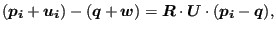
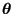
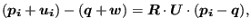
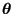

Keyword type: step
This option is used to print selected nodal variables in file jobname.frd forsubsequent viewing by CalculiX GraphiX. The following variables can beselected (the label is squarebrackets [] is the one used in the .frd file; for frequency calculations withcyclic symmetry both a real and an imaginary part may be stored, in all other cases only thereal part is stored):
The selected variables are stored for the complete model.
The external forces (key RF) are the sum ofthe reaction forces, concentrated loads (*CLOAD) and distributed loads(*DLOAD) in the node at stake. Only in the absence of concentrated loads inthe node and distributed loads in any element to which the node belongs, theexternal forces reduce to the reaction forces. Forces induced by multiplepoint constraints are not calculated. Since single point constraints definedin transformed coordinates are converted into multiple point constraints inthe global rectangular system, the force in a node in which a SPC is definedin local coordinates are not correctly delivered upon using the RF key incombination with the *NODE PRINT keyword card.
For frequency calculations with cyclic symmetry the eigenmodes are generatedin pairs (different by a phase shift of 90 degrees). Only the first one ofeach pair is stored in the frd file. If U is selected (the displacements) twoload cases are stored in the frd file: a loadcase labeled DISPcontaining the real part of the displacements and a loadcase labeled DISPIcontaining the imaginary part of the displacements. For all other variables onlythe real part is stored.
The first occurrence of an *NODE FILE keyword card within a step wipesout all previous nodal variable selections for file output. If no*NODE FILE card is used within a step the selections of the previousstep apply. If there is no previous step, no nodal variables will be stored.
Notice that only values in nodes belonging to elements arestored. Values in nodes not belonging to any element (e.g. therotational node in a *RIGID BODY option) can only beobtained using *NODE PRINT.
There are seven optional parameters: FREQUENCY, FREQUENCYF, GLOBAL, OUTPUT, TIMEPOINTS, NSET, LAST ITERATIONS and CONTACT ELEMENTS. The parameters FREQUENCY and TIME POINTS are mutually exclusive.
FREQUENCY applies tononlinear calculations where a step can consist of severalincrements. Default is FREQUENCY=1, which indicates that the resultsof all increments will be stored. FREQUENCY=N with N an integerindicates that the results of every Nth increment will be stored. Thefinal results of a step are always stored. If you only want the finalresults, choose N very big. The value of N applies to *OUTPUT,*ELEMENT OUTPUT, *EL FILE, *ELPRINT, *NODE OUTPUT,*NODE FILE, *NODE PRINT,*SECTION PRINT,*CONTACT OUTPUT,*CONTACT FILE and *CONTACT PRINT. If the FREQUENCY parameter is usedfor more than one of these keywords with conflicting values of N, thelast value applies to all. A frequency parameter stays active across several stepsuntil it is overwritten by another FREQUENCY value or the TIME POINTS parameter.
The 3D fluid analogue of FREQUENCY is FREQUENCYF. In coupled calculationsFREQUENCY applies to the thermomechanical output, FREQUENCYF to the 3D fluid output.
With the parameter GLOBAL you tell the program whether you would like theresults in the global rectangular coordinate system or in the local nodalsystem. If an *TRANSFORM card is applied to the node at stake, this card definesthe local system. If no *TRANSFORM card is applied to theelement, the local system coincides with the global rectangularsystem. Default value for the GLOBAL parameter is GLOBAL=YES,which means that the results are stored in the global system. If you prefer theresults in the local system, specify GLOBAL=NO.
The parameter OUTPUT can take the value 2D or 3D. This has onlyeffect for 1d and 2d elements such as beams, shells, plane stress, planestrain and axisymmetric elements AND provided it is used in the first step. IfOUTPUT=3D, the 1d and 2d elements are stored in their expanded three-dimensionalform. In particular, the user has the advantage to see his/her 1d/2d elementswith their real thickness dimensions. However, the node numbers are new and donot relate to the node numbers in the input deck. Once selected, thisparameter is active in the complete calculation. If OUTPUT=2D the fields in the expanded elements are averaged to obtainthe values in the nodes of the original 1d and 2d elements. In particular,averaging removes the bending stresses in beams andshells. Therefore, default for beamsand shells is OUTPUT=3D, for plane stress, plane strain and axisymmetricelements it is OUTPUT=2D. For axisymmetric structures and OUTPUT=2D the mass flow (MF) andthe external force (RF) are stored for 360 , else it is stored for thedisplayed 3D segment, i.e. 2
, else it is stored for thedisplayed 3D segment, i.e. 2 . If OUTPUT=3D is selected, the parameter NSET is deactivated.
. If OUTPUT=3D is selected, the parameter NSET is deactivated.
With the parameter TIME POINTS a time point sequence can be referenced,defined by a *TIME POINTS keyword. In that case, output will beprovided for all time points of the sequence within the step and additionally at the end ofthe step. No other output will be stored and the FREQUENCY parameter is nottaken into account. Within a step only one time point sequence can be active. If more thanone is specified, the last one defined on any of the keyword cards*NODE FILE, *EL FILE, *NODE PRINT or *EL PRINT will be active. The TIMEPOINTS option should not be used together with the DIRECT option on theprocedure card. The TIME POINTS parameters stays active across several stepsuntil it is replaced by another TIME POINTS value or the FREQUENCY parameter.
The specification of a node set with the parameter NSET limits the output tothe nodes contained in the set. For cyclic symmetric structures the usage of theparameter NGRAPH on the *CYCLIC SYMMETRY MODELcard leads to output of the results not only for the node set specified by theuser (which naturally belongs to the base sector) but also for allcorresponding nodes of the sectors generated by the NGRAPH parameter. Noticethat for cyclic symmetric structures the use of NSET is mandatory.
The parameter LAST ITERATIONS leads to the storage of thedisplacements in all iterationsof the last increment in a file with name ResultsForLastIterations.frd (can be opened with CalculiX GraphiX). This isuseful for debugging purposes in case of divergence. No such file is created ifthis parameter is absent.
Finally, the parameter CONTACT ELEMENTS stores the contact elements which havebeen generated in each iteration in a file with the namejobname.cel. Whenopening the frd file with CalculiX GraphiX these files can be read with thecommand ``read jobname.cel inp'' and visualized byplotting the elements in the setscontactelements_st _in_at_it
_in_at_it , where
, where  is the step number, the increment number, the attempt numberand
is the step number, the increment number, the attempt numberand  the iteration number.
the iteration number.
First line:
Example: *NODE FILE,TIME POINTS=T1 RF,NT
requests the storage of reaction forces and temperatures in the .frdfile for all timepoints defined by the T1 time points sequence.
Example files: beampt, beampo1.